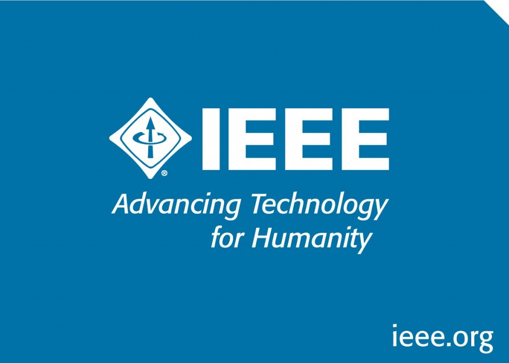

Codigo de la IEEE

IEEE es un estándar establecido por el Instituto de Ingenieros Eléctricos y Electrónicos (IEEE). Esta asociación es una organización profesional que trabaja para desarrollar protocolos y reglas para diversas tecnologías. Un protocolo es un conjunto de convenciones instituidas con el propósito de estandarizar una industria o un sector de componentes de una industria.
Este no se limita solo a la industria informática y tecnológica. La organización produce protocolos para una amplia gama de sectores comerciales. Algunos de los otros campos para los que el IEEE establece convenciones son las industrias ferroviaria y naval, la biometría e incluso la toma de huellas dactilares.
El IEEE se formó en 1963 cuando dos organizaciones, el Instituto Americano de Ingenieros Eléctricos y el Instituto de Ingenieros de Radio, unieron fuerzas y fusionaron sus operaciones. Desde entonces, el IEEE se ha convertido en una de las organizaciones de estándares más importantes y respetadas del mundo.
Los ingenieros de software debieran obligarse a hacer del análisis, especificación, diseño, desarrollo, pruebas y mantenimiento del software una profesión respetada y beneficiosa. En concordancia con la obligación con el bienestar, salud y seguridad de la sociedad, los ingenieros del software debieran adherirse a los Ocho Principios siguientes:
Sociedad: Los ingenierios de software actuarán de manera coherente con el interés social.
Cliente y Empresario: los ingenieros de software actuarán de manera que produzca el mejor resultado para cliente y empresario, y de manera coherente con el interés social.
Producto: los ingenieros de software garantizarán que sus productos y las modificaciones correspondientes cumplen los mayores estándares profesionales posibles.
Valoración: los ingenieros de software mantendrán la integridad e independencia en sus valoraciones profesionales.
Gestión: los líderes y gestores de ingeniería de software suscribirán y promoverán un enfoque ético en la gestión del desarrollo y mantenimiento del software.
Profesión: los ingenieros de software avanzarán en la integridad y reputación de la profesión, de manerar consistente con el interés social.
Compañeros: los ingenieros del software serán justos y apoyarán a sus compañeros.
Personal: los ingenieros del software participarán en el aprendizaje continuo referente a la práctica de su profesión y promoverán un enfoque ético en la práctica de la profesión.
¿Qué es el protocolo IEEE?. (s.f). Recuperado de https://quesignificado.org/que-es-el-protocolo-ieee/#:~:text=Un%20protocolo%20IEEE%20es%20un%20est%C3%A1ndar%20establecido%20por,para%20desarrollar%20protocolos%20y%20reglas%20para%20diversas%20tecnolog%C3%ADas.
Dolado, J. (s.f). El Código de Ética y Práctica Profesional de Ingeniería del Software. (s.f). Recuperado de http://www.sc.ehu.es/jiwdocoj/elcodigo.html
Código de la ACM

ACM proviene del inglés Association for Computing Machinery (Asociación de los Sistemas Informáticos) fue fundada en 1947 como la primera sociedad científica y educativa acerca de la Computación.
El Código está diseñado para inspirar y guiar la conducta ética de todos los profesionales de la Informática, incluyendo a los profesionales actuales y futuros, a los instructores, los estudiantes, las personas influyentes y a cualquiera que utilice la tecnología informática para generar un impacto. Además, el Código sirve como una base para corregir posibles infracciones. El Código incluye principios formulados como declaraciones de responsabilidad, basados en la idea de que el bien público siempre es la primera prioridad. Cada principio esta complementado con guías que proporcionan explicaciones para ayudar a los profesionales de la Informática a comprenderlo y aplicarlo.
En general, aborda el modo en el que los principios éticos fundamentales se aplican a las conductas de un profesional de la informática. El Código no es un algoritmo para resolver problemas éticos; sino que sirve como un punto de partida para la toma de decisiones éticas. Al abordar un problema particular, un profesional de la informática puede enfrentarse a múltiples principios que deben ser tenidos en cuenta, y aquellos principios pueden mostrar diferentes grados de relevancia para el problema abordado.
La primera parte incluye las consideraciones éticas fundamentales:
Contribuiré al bienestar de la sociedad y de la humanidad: Declara una obligación para proteger los derechos humanos fundamentales y respetar la diversidad de todas las culturas.
Evitaré daño a otros: Se refiere a no realizar acciones perjudiciales son la destrucción intencional o modificación de ficheros y programas que conlleven una grave pérdida de recursos, o un gasto innecesario de recursos humanos tales como el tiempo y esfuerzo requerido para limpiar los sistemas de virus informáticos.
Seré honesto/a y confiable: El informático honesto no hará falsas o engañosas declaraciones acerca de un sistema o diseño de sistema, sino que, por el contrario, proporcionará una completa exposición de todas las limitaciones y problemas pertinentes del sistema.
Seré justo/a y actuaré para no discriminar: Se ha de tener valores de igualdad, tolerancia, respeto a los demás y los principios justicia equitativa.
Respetaré los derechos de propiedad, incluyendo las patentes y derechos de autor.
Reconoceré adecuadamente la propiedad intelectual.
Respetaré la intimidad de otros: Es responsabilidad de los profesionales el mantener la confidencialidad e intimidad de los datos pertenecientes a las personas. Esto incluye tomar precauciones para garantizar la corrección de los datos, así como protegerlos de accesos no autorizados, o accidentales, a las personas no autorizadas. Además, se deben establecer procedimientos para permitir a las personas revisar sus registros y corregir las incorrecciones.
Respetaré la confidencialidad.
La segunda parte trata reflexiones sobre la conducta profesional
Me esforzaré para alcanzar la mayor calidad, efectividad y dignidad en los procesos y productos del trabajo profesional. El profesional de la informática debe esforzarse para conseguir calidad y ser consciente de las graves consecuencias negativas que pueden resultar de la pobre calidad de un sistema.
Adquiriré y mantendré la capacitación profesional: Un/a profesional debe participar en la definición de los estándares para los diferentes niveles de capacitación, y debe esforzarse para alcanzarlos.
Conoceré y respetaré las leyes existentes relacionadas con el trabajo profesional.
Aceptaré y proporcionaré la adecuada revisión profesional.
Proporcionaré evaluaciones completas y extensas de los sistemas informáticos y sus consecuencias, incluyendo el análisis de los posibles riesgos: Se debe ser perceptivos, meticulosos y objetivos cuando evalúen, recomienden y presenten descripciones de sistemas y sus alternativas.
Respetaré los contratos, acuerdos y las responsabilidades asignadas: Esto incluye garantizar que los elementos del sistema funcionan tal como se esperaba.
Mejoraré la comprensión por la comunidad de la informática y sus consecuencias Los informáticos tienen la responsabilidad de compartir su conocimiento con la sociedad, promoviendo la comprensión de la informática, incluyendo los impactos de los sistemas informáticos y sus limitaciones. Este mandato obliga a contrarrestar cualquier opinión equivocada sobre la informática.
Accederé a los recursos de comunicación e informática sólo cuando se esté autorizado a hacerlo.
La tercera parte corresponde a personas que tengan una función de liderazgo.
Articularé las responsabilidades sociales de los miembros de una unidad organizativa y fomentaré la completa aceptación de esas responsabilidades. La dirección de la organización debe promover el completo cumplimiento tanto de las responsabilidades sociales como de la calidad del rendimiento.
Gestionaré personal y recursos para diseñar y construir sistemas de información que mejoren la calidad, efectividad y dignidad de la vida laboral.
Reconoceré y apoyaré los usos adecuados y autorizados de los recursos informáticos y de comunicaciones de la organización: La dirección tiene la responsabilidad de definir claramente los usos adecuados e inadecuados de sus recursos informáticos. Aunque el número y alcance de tales reglas debieran ser mínimos, deben hacerse cumplir una vez se hayan establecido.
Garantizaré que los usuarios y aquellos que se verán afectados por el sistema informático han articulado claramente sus necesidades durante la evaluación y el diseño de los requisitos. Después el sistema debe ser validado para cumplir los requisitos
Articularé y apoyaré las políticas que protegen la dignidad de los usuarios y de quienes se vean afectados por el sistema informático
Crearé condiciones para que los miembros de la organización aprendan los principios y limitaciones de los sistemas informáticos.
La cuarta parte trata los principios que involucran conformidad con este código.
Defenderé y promoveré los principios de éste código.
Trataré los inclumplimientos de este código como inconsecuentes con la afiliación a la ACM.
(2017, January 26). Código de ACM. Recuperado de https://wikis.fdi.ucm.es/ELP/C%C3%B3digo_de_ACM#:~:text=ACM%20proviene%20del%20ingl%C3%A9s%20Association,los%20profesionales%20de%20la%20inform%C3%A1tica.